Normalizing Flows for GlueX Simulation#

We are going to look at two different neutral particles in the Barrel Calorimeter (BCAL), photons (\(\gamma\)) and neutrons (\(n\)) and use normalizing flows to generate them. We will make assumptions that both classes are well represented by the simulation.
Load the data and take a look#
# Lets load the data. We store in simple csv files.
import pandas as pd
neutrons = pd.read_csv(r"Neutrons.csv",sep=',',index_col=None)
photons = pd.read_csv(r"Photons.csv",sep=',',index_col=None)
print(neutrons.columns)
print(photons.columns)
Index(['recon_BCAL_z_entry', 'recon_BCAL_E', 'recon_BCAL_r',
'recon_BCAL_Layer1_E', 'recon_BCAL_Layer2_E', 'recon_BCAL_Layer3_E',
'recon_BCAL_Layer4_E', 'recon_BCAL_Layer4bySumLayers_E',
'recon_BCAL_Layer3bySumLayers_E', 'recon_BCAL_Layer2bySumLayers_E',
'recon_BCAL_Layer1bySumLayers_E', 'recon_BCAL_ZWidth',
'recon_BCAL_RWidth', 'recon_BCAL_TWidth', 'recon_BCAL_PhiWidth',
'recon_BCAL_ThetaWidth'],
dtype='object')
Index(['recon_BCAL_z_entry', 'recon_BCAL_E', 'recon_BCAL_r',
'recon_BCAL_Layer1_E', 'recon_BCAL_Layer2_E', 'recon_BCAL_Layer3_E',
'recon_BCAL_Layer4_E', 'recon_BCAL_Layer4bySumLayers_E',
'recon_BCAL_Layer3bySumLayers_E', 'recon_BCAL_Layer2bySumLayers_E',
'recon_BCAL_Layer1bySumLayers_E', 'recon_BCAL_ZWidth',
'recon_BCAL_RWidth', 'recon_BCAL_TWidth', 'recon_BCAL_PhiWidth',
'recon_BCAL_ThetaWidth'],
dtype='object')
We want to learn the generate the features of the BCAL as a function of the kinematics#
Lets look at how the features are distributed for both photons and neutrons, as a function of the two kinematic variables.
\(\boldsymbol{z}\) - recon_BCAL_z_entry
This is the z position (along the beamline) that a particle interacts with the innermost layer of the BCAL. The shower profile will change with a function of z. Does this make sense to you?
\(\boldsymbol{E}\) - recon_BCAL_E
The total reconstructed (by the detector) energy of a particle. The shower profile will change as a function of energy? Does this make sense to you?
import numpy as np
import matplotlib.pyplot as plt
import matplotlib as mpl
def make_plots(dataset,particle):
columns = ['recon_BCAL_r', 'recon_BCAL_Layer1_E', 'recon_BCAL_Layer2_E',
'recon_BCAL_Layer3_E', 'recon_BCAL_Layer4_E',
'recon_BCAL_Layer4bySumLayers_E', 'recon_BCAL_Layer3bySumLayers_E',
'recon_BCAL_Layer2bySumLayers_E', 'recon_BCAL_Layer1bySumLayers_E',
'recon_BCAL_ZWidth', 'recon_BCAL_RWidth', 'recon_BCAL_TWidth',
'recon_BCAL_PhiWidth', 'recon_BCAL_ThetaWidth']
fig, axs = plt.subplots(2,7, figsize=(30, 10), facecolor='w', edgecolor='k')
fig.subplots_adjust(hspace = 0.4, wspace=.3)
axs = axs.ravel()
labels = ['Radius',
r'$E (1^{st} \, Layer)$',
r'$E (2^{nd} \, Layer)$',
r'$E (3^{rd} \, Layer)$',
r'$E (4^{th} \, Layer)$',
r'$\frac{E (4^{th} \, Layer)}{\sum E}$',
r'$\frac{E (3^{rd} \, Layer)}{\sum E}$',
r'$\frac{E (2^{nd} \, Layer)}{\sum E}$',
r'$\frac{E (1^{st} \, Layer)}{\sum E}$',
r'$Z \, Width$',
r'$R \, Width$',
r'$T \, Width$',
r'$\phi \, Width$',
r'$\theta \, Width$']
i = 0
print(particle)
for column in columns:
y = dataset[column]
x = dataset['recon_BCAL_E']
axs[i].hist2d(y,x,bins=55,density=True,alpha=1.0,norm=mpl.colors.LogNorm())
plt.setp(axs[i].get_xticklabels(), fontsize=14)
plt.setp(axs[i].get_yticklabels(), fontsize=15)
ticks = np.linspace(min(y),max(y),4)
ticks = np.around(ticks,decimals=2)
axs[i].set_xticks(ticks=ticks)
s = labels[i]
axs[i].set_xlabel(s,fontsize=25,labelpad=5)
if ((i == 0) or (i == 7)):
axs[i].set_ylabel('Energy',fontsize=25,labelpad=9)
i+=1
N = len(columns)
for ax in axs.flat[N:]:
ax.remove()
plt.show()
plt.close()
fig, axs = plt.subplots(2,7, figsize=(30, 10), facecolor='w', edgecolor='k')
fig.subplots_adjust(hspace = 0.4, wspace=.3)
axs = axs.ravel()
i = 0
for column in columns:
y = dataset[column]
x = dataset['recon_BCAL_z_entry']
axs[i].hist2d(y,x,bins=55,density=True,alpha=1.0,norm=mpl.colors.LogNorm())
plt.setp(axs[i].get_xticklabels(), fontsize=14)
plt.setp(axs[i].get_yticklabels(), fontsize=15) #to Set Matplotlib Tick Labels Font Size.
ticks = np.linspace(min(y),max(y),4)
ticks = np.around(ticks,decimals=2)
axs[i].set_xticks(ticks=ticks)
s = labels[i]
axs[i].set_xlabel(s,fontsize=25,labelpad=5)
if ((i == 0) or (i == 7)):
axs[i].set_ylabel('Z Position',fontsize=25,labelpad=9)
i+=1
N = len(columns)
for ax in axs.flat[N:]:
ax.remove()
plt.show()
plt.close()
make_plots(photons,"Photons")
Photons
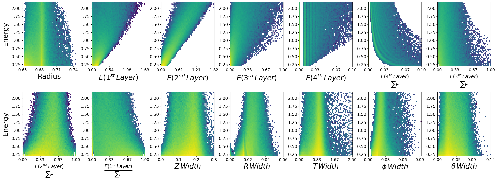
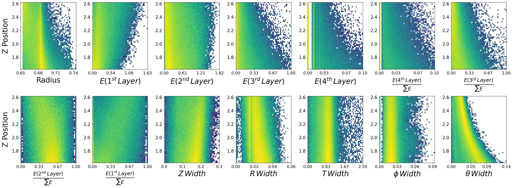
make_plots(neutrons,"Neutrons")
Neutrons
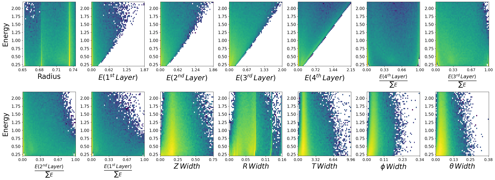
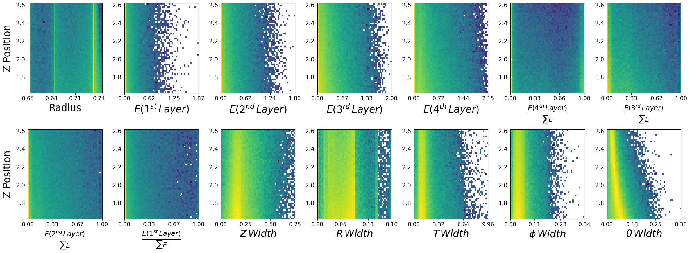
Data visualization is important#
We have expected distributions of the features as a function of the two kinematic parameters. This will be useful later for comparisons. We can generate artificial data with out network and check if the relationships are retained.
Now lets work on making methods to load the data into our models using standard pytorch functions.
I am going to introduce you to two different methods.
Custom Datasets
Dataloaders
Note that we don’t really need a custom dataset here and a simple TensorDataset() would do just fine, but lets use one anyways to get you more familiar with different pytorch methods.
Lets setup dictionaries of the normalization statistics of the two datasets, i.e., maximum and minimums. We could just use an sklearn method of MinMaxScaler() here, but lets consider a case when this is not feasible. For example, if we cannot fit all data into RAM and we need to load batches from file (not the case here, but you could face this).
One could precompute the statistics and load individual files to create the batches, scaling in the way we will define below.
fields = photons.columns
stats = {}
for field in fields:
p_max = photons[field].max()
n_max = neutrons[field].max()
p_min = photons[field].min()
n_min = neutrons[field].min()
stats[f"{field}_max"] = max(p_max,n_max)
stats[f"{field}_min"] = min(p_min,n_min)
stats
{'recon_BCAL_z_entry_max': np.float64(2.6199997),
'recon_BCAL_z_entry_min': np.float64(1.6200029),
'recon_BCAL_E_max': np.float64(2.1999831),
'recon_BCAL_E_min': np.float64(0.2000011),
'recon_BCAL_r_max': np.float64(0.74404915),
'recon_BCAL_r_min': np.float64(0.65299995),
'recon_BCAL_Layer1_E_max': np.float64(1.8684639),
'recon_BCAL_Layer1_E_min': np.float64(0.0),
'recon_BCAL_Layer2_E_max': np.float64(1.8641225),
'recon_BCAL_Layer2_E_min': np.float64(0.0),
'recon_BCAL_Layer3_E_max': np.float64(2.002063),
'recon_BCAL_Layer3_E_min': np.float64(0.0),
'recon_BCAL_Layer4_E_max': np.float64(2.1544363),
'recon_BCAL_Layer4_E_min': np.float64(0.0),
'recon_BCAL_Layer4bySumLayers_E_max': np.float64(0.99562687),
'recon_BCAL_Layer4bySumLayers_E_min': np.float64(0.0),
'recon_BCAL_Layer3bySumLayers_E_max': np.float64(1.0),
'recon_BCAL_Layer3bySumLayers_E_min': np.float64(0.0),
'recon_BCAL_Layer2bySumLayers_E_max': np.float64(1.0),
'recon_BCAL_Layer2bySumLayers_E_min': np.float64(0.0),
'recon_BCAL_Layer1bySumLayers_E_max': np.float64(1.0),
'recon_BCAL_Layer1bySumLayers_E_min': np.float64(0.0),
'recon_BCAL_ZWidth_max': np.float64(0.7497995999999999),
'recon_BCAL_ZWidth_min': np.float64(0.00046754237),
'recon_BCAL_RWidth_max': np.float64(0.158894415),
'recon_BCAL_RWidth_min': np.float64(5.087822e-09),
'recon_BCAL_TWidth_max': np.float64(9.955425),
'recon_BCAL_TWidth_min': np.float64(6.242522e-05),
'recon_BCAL_PhiWidth_max': np.float64(0.33884382),
'recon_BCAL_PhiWidth_min': np.float64(1.1770585e-12),
'recon_BCAL_ThetaWidth_max': np.float64(0.38148192),
'recon_BCAL_ThetaWidth_min': np.float64(0.0002796732)}
import numpy as np
import pandas as pd
import random
from torch.utils.data import Dataset
import torch
class BCALDataset(Dataset):
def __init__(self,dataset,mode="Single",stats=None):
if mode is None:
print("Please select one of the following modes:")
print("1. Single")
print("2. Combined")
exit()
self.stats = stats
if self.stats is not None:
self.max_values = np.array([self.stats[key] for key in list(self.stats.keys())[4:] if key.endswith('_max')])
self.min_values = np.array([self.stats[key] for key in list(self.stats.keys())[4:] if key.endswith('_min')])
self.max_conds = np.array([self.stats[key] for key in list(self.stats.keys())[:4] if key.endswith('_max')])
self.min_conds = np.array([self.stats[key] for key in list(self.stats.keys())[:4] if key.endswith('_min')])
else:
print("Applying no scaling to your data.")
if mode == "Single":
self.data = dataset
elif mode == "Combined":
print('You need to write some code!')
exit()
# I leave this up to you.
# Is it possible to combine the two particles under one model?
# What else would you need to add?
# Hint: Perhaps another conditional parameter corresponding to the PID (label)?
else:
print("Error in dataset creation. Exiting")
exit()
def __len__(self):
return len(self.data)
def scale_features(self,data):
return 2.0 * (data - self.min_values) / (self.max_values - self.min_values) - 1.0 # (-1,1)
def scale_conditions(self,conditions):
return (conditions - self.min_conds) / (self.max_conds - self.min_conds) # (0,1)
def __getitem__(self, idx):
# Get the sample
data = self.data[idx]
conditions = data[:2]
features = data[2:]
unscaled_conditions = conditions.copy()
if self.stats is not None:
conditions = self.scale_conditions(conditions)
features = self.scale_features(features)
# PID = data[-1] # Incase you want to get creative and combine the models. How could we use a PID?
return features,conditions,unscaled_conditions
Lets take a look at how this works.
In pytorch when we create a custom dataset we will pass this to a “DataLoader”. The dataloader is simple a method of providing indicies to our getitem() function. All custom datasets need to have this function in order for the dataloader to be able to properly return batches!
With custom datasets we are able to have better control over our loading pipeline. As mentioned before, consider the case where you have large inputs that cannot all fit into RAM at once. Instead of grabbing a specific index of a preloaded numpy array (as above) we could load individual numpy files and create batches this way inside the getitem() function.
photon_dataset = BCALDataset(dataset=photons.to_numpy(),stats=stats,mode='Single')
Lets grab one item from our dataset and see what it looks like.
features,conditions,unscaled_conditions = photon_dataset.__getitem__(0)
print("Scaled Features")
print(features)
print("Scaled Conditions")
print(conditions)
print("Conditions")
print(unscaled_conditions)
del photon_dataset
Scaled Features
[-0.3991721 -0.40765139 -0.19837827 -0.71272782 -0.98625145 -0.98143995
-0.64119646 -0.0677566 -0.3095258 -0.54592446 -0.61825955 -0.80214282
-0.88954777 -0.75460464]
Scaled Conditions
[0.26407545 0.73630133]
Conditions
[1.8840775 1.6725905]
DataLoaders#
Now that we have an object that can sufficiently provide data to your network. We need to wrap it with a DataLoader() from pytorch. Why?
A pytorch dataloader takes as input some sort of Dataset object. It will then look at the entire length of the dataset and precompute a series of indices to form batches. For example, lets say our batch size is 5, the dataloader will produce something as follows:
\(B_1 = [0,10,25,45,21]\)
\(B_2 = [14,13,22,16,99]\)
Each of these integers is simply an index! This will produce a tensor of shape (5,features).
Now lets also make a custom collate function. A collate function simply tells the dataloader how I want you to format the output from my dataset.
from torch.utils.data import DataLoader
def BCAL_Collate(batch):
features = []
conditions = []
unscaled = []
# PIDs = []
for f,c,uc in batch:
features.append(torch.tensor(f))
conditions.append(torch.tensor(c))
unscaled.append(torch.tensor(uc))
return torch.stack(features),torch.stack(conditions),torch.stack(unscaled)
# Create dataloaders to iterate.
def CreateLoaders(train_dataset,val_dataset,test_dataset,train_batch,val_batch,test_batch):
train_loader = DataLoader(train_dataset,
batch_size=train_batch,
shuffle=True,collate_fn=BCAL_Collate,num_workers=0,pin_memory=False)
val_loader = DataLoader(val_dataset,
batch_size=val_batch,
shuffle=False,collate_fn=BCAL_Collate,num_workers=0,pin_memory=False)
test_loader = DataLoader(test_dataset,
batch_size=val_batch,
shuffle=False,collate_fn=BCAL_Collate,num_workers=0,pin_memory=False)
return train_loader,val_loader,test_loader
Note that once again we do not need a custom collate function. Our data is a simple tabular format and pytorch has prebuilt functions (TensorDataset() and its collate function) that would handle this. But lets be complete.
Notice some of the arguments in the above DataLoader() functions. Here we control the batch size, whether we want to shuffle indices between epochs, etc. There are other arguments that are not extremely important here such as. You can see how these work in more complex environments here: https://pytorch.org/docs/stable/data.html
We have one more thing to do, we need to make a train,val,test split. We can use sklearn() functions to do this, or we can do it manually.
def create_train_test_split(dataset):
Nt = int(0.7 * len(dataset))
train = dataset[:Nt]
test_val = dataset[Nt:]
Nv = int(0.5 *len(test_val))
val = test_val[:Nv]
test = test_val[Nv:]
print("Total dataset size: ",len(dataset))
print("Number of Training data points: ",len(train))
print("Number of Validation data points: ",len(val))
print("Number of Testing data points: ",len(test))
return train,val,test
training_photons,validation_photons,testing_photons = create_train_test_split(photons.to_numpy())
Total dataset size: 1726143
Number of Training data points: 1208300
Number of Validation data points: 258921
Number of Testing data points: 258922
Now lets complete the entire dataloading pipeline.
train_photons = BCALDataset(dataset=training_photons,mode="Single",stats=stats)
val_photons = BCALDataset(dataset=validation_photons,mode="Single",stats=stats)
test_photons = BCALDataset(dataset=testing_photons,mode="Single",stats=stats)
# Lets use batch sizes of 2048
train_batch_size = 2048
val_batch_size = 2048
test_batch_size = 2048
train_loader,val_loader,test_loader = CreateLoaders(train_photons,val_photons,test_photons,train_batch_size,val_batch_size,test_batch_size)
Now we can simple iterate the dataset as below. Being that you all have GPU access, we will make a simple assumption and put everything to GPU by default in training.
for i,data in enumerate(train_loader):
print("Features: ",data[0])
print("Scaled Conditions: ",data[1])
print("Conditions: ",data[2])
break
Features: tensor([[-0.7354, -0.2106, -0.5411, ..., -0.8287, -0.8140, -0.8600],
[-0.6728, -0.7613, -0.7786, ..., -0.8435, -0.8604, -0.7812],
[-0.2396, -0.8950, -0.5691, ..., -0.8763, -0.8800, -0.7680],
...,
[-0.3499, -0.7163, -0.2374, ..., -0.8462, -0.8497, -0.8275],
[-0.3429, -0.9872, -0.8199, ..., -0.9282, -0.9035, -0.8993],
[-0.4345, -0.8280, -0.6824, ..., -0.8335, -0.9009, -0.8599]],
dtype=torch.float64)
Scaled Conditions: tensor([[0.8422, 0.5379],
[0.2350, 0.1472],
[0.0269, 0.3064],
...,
[0.7731, 0.4733],
[0.2441, 0.0265],
[0.9440, 0.1847]], dtype=torch.float64)
Conditions: tensor([[2.4622, 1.2758],
[1.8550, 0.4944],
[1.6469, 0.8129],
...,
[2.3931, 1.1465],
[1.8641, 0.2531],
[2.5640, 0.5693]], dtype=torch.float64)
The model#
This is fairly complicated, but we have written it to be inclusive of everything you will need.
The functions we will be using are:
log_prob() -> for training.
_sample() -> for generation.
import torch.nn as nn
from FrEIA.modules.base import InvertibleModule
import warnings
from typing import Callable
import math
import numpy as np
import torch
import torch.nn as nn
import torch.nn.functional as F
from scipy.stats import special_ortho_group
import FrEIA.framework as Ff
import FrEIA.modules as Fm
from nflows.distributions.normal import ConditionalDiagonalNormal
from nflows.utils import torchutils
from typing import Union, Iterable, Tuple
class FreiaNet(nn.Module):
def __init__(self,input_shape,layers,context_shape,embedding=False,hidden_units=512,num_blocks=2,stats=None,device='cuda'):
super(FreiaNet, self).__init__()
self.input_shape = input_shape
self.layers = layers
self.context_shape = context_shape
self.embedding = embedding
self.hidden_units = hidden_units
self.num_blocks = num_blocks
self.device = device
self.stats = stats
if self.stats is not None:
self.max_values = torch.tensor(np.array([self.stats[key] for key in list(self.stats.keys())[4:] if key.endswith('_max')])).to(device)
self.min_values = torch.tensor(np.array([self.stats[key] for key in list(self.stats.keys())[4:] if key.endswith('_min')])).to(device)
self.max_conds = torch.tensor(np.array([self.stats[key] for key in list(self.stats.keys())[:4] if key.endswith('_max')])).to(device)
self.min_conds = torch.tensor(np.array([self.stats[key] for key in list(self.stats.keys())[:4] if key.endswith('_min')])).to(device)
else:
print("You have no included any stats for normalization values. Is this intentional?")
if self.embedding:
self.context_embedding = nn.Sequential(*[nn.Linear(context_shape,16),nn.ReLU(),nn.Linear(16,input_shape)])
# Here we are setting up the conditional distribution
# We will use an MLP to perform a learnable transformation on our conditions
# The output of the MLP will characterize the mean and std of our Gaussian distribution
context_encoder = nn.Sequential(*[nn.Linear(context_shape,16),nn.ReLU(),nn.Linear(16,input_shape*2)])
self.distribution = ConditionalDiagonalNormal(shape=[input_shape],context_encoder=context_encoder)
# Create the bijective functions
# Here we are combining FrEAI and NFlows
# We will use the affine coupling transformation from FrEAI, but this entire function is derived from NFlows.
def create_freai(input_shape,layer,cond_shape):
inn = Ff.SequenceINN(input_shape)
for k in range(layers):
inn.append(Fm.AllInOneBlock,cond=0,cond_shape=(cond_shape,),subnet_constructor=subnet_fc, permute_soft=True)
return inn
def block(hidden_units):
return [nn.Linear(hidden_units,hidden_units),nn.ReLU(),nn.Linear(hidden_units,hidden_units),nn.ReLU()]
def subnet_fc(c_in, c_out):
blks = [nn.Linear(c_in,hidden_units)]
for _ in range(num_blocks):
blks += block(hidden_units)
blks += [nn.Linear(hidden_units,c_out)]
return nn.Sequential(*blks)
self.sequence = create_freai(self.input_shape,self.layers,self.context_shape)
def log_prob(self,inputs,context):
if self.embedding:
embedded_context = self.context_embedding(context)
else:
embedded_context = context
noise,logabsdet = self.sequence.forward(inputs,rev=False,c=[embedded_context])
log_prob = self.distribution.log_prob(noise,context=embedded_context)
return log_prob + logabsdet
def __sample(self,num_samples,context):
if self.embedding:
embedded_context = self.context_embedding(context)
else:
embedded_context = context
noise = self.distribution.sample(num_samples,context=embedded_context)
if embedded_context is not None:
noise = torchutils.merge_leading_dims(noise, num_dims=2)
embedded_context = torchutils.repeat_rows(
embedded_context, num_reps=num_samples
)
samples, _ = self.sequence.forward(noise,rev=True,c=[embedded_context])
return samples
def unscale(self,x):
return 0.5 * (x + 1) * (self.max_values - self.min_values) + self.min_values
def _sample(self,num_samples,context):
samples = self.__sample(num_samples,context)
samples = self.unscale(samples)
return samples.detach().cpu().numpy()
def sample_and_log_prob(self,num_samples,context):
if self.embedding:
embedded_context = self._embedding_net(context)
else:
embedded_context = context
noise, log_prob = self.distribution.sample_and_log_prob(
num_samples, context=embedded_context
)
if embedded_context is not None:
# Merge the context dimension with sample dimension in order to apply the transform.
noise = torchutils.merge_leading_dims(noise, num_dims=2)
embedded_context = torchutils.repeat_rows(
embedded_context, num_reps=num_samples
)
samples, logabsdet = self.sequence.forward(noise,rev=True,c=[embedded_context])
if embedded_context is not None:
# Split the context dimension from sample dimension.
samples = torchutils.split_leading_dim(samples, shape=[-1, num_samples])
logabsdet = torchutils.split_leading_dim(logabsdet, shape=[-1, num_samples])
samples = self.unscale(samples)
return samples.detach().cpu().numpy(), (log_prob - logabsdet).detach().cpu().numpy()
# Lets make a model. We will use the following parameters:
# input_shape,layers,context_shape,embedding=False,hidden_units=512,num_blocks=2
input_shape = 14 # the number of features we have
layers = 8 # how many chained bijections do we want to use i.e., f(f(f(x)))
context_shape = 2 # Number of conditional parameters
hidden_units = 256 # Recall that in our affine function we parameterize part of the transformation with a neural network.
# This controls how many "nodes" we want to use at each layer of this neural network
num_blocks = 2 # How many instances of the NN we use in the affine function -> see block() function above.
# stats = stats -> we will simply use the predefined statistics from above
photon_network = FreiaNet(input_shape=input_shape,layers=layers,context_shape=context_shape,hidden_units=hidden_units,num_blocks=num_blocks,stats=stats)
photon_network
FreiaNet(
(distribution): ConditionalDiagonalNormal(
(_context_encoder): Sequential(
(0): Linear(in_features=2, out_features=16, bias=True)
(1): ReLU()
(2): Linear(in_features=16, out_features=28, bias=True)
)
)
(sequence): SequenceINN(
(module_list): ModuleList(
(0-7): 8 x AllInOneBlock(
(softplus): Softplus(beta=0.5, threshold=20.0)
(subnet): Sequential(
(0): Linear(in_features=9, out_features=256, bias=True)
(1): Linear(in_features=256, out_features=256, bias=True)
(2): ReLU()
(3): Linear(in_features=256, out_features=256, bias=True)
(4): ReLU()
(5): Linear(in_features=256, out_features=256, bias=True)
(6): ReLU()
(7): Linear(in_features=256, out_features=256, bias=True)
(8): ReLU()
(9): Linear(in_features=256, out_features=14, bias=True)
)
)
)
)
)
Training function#
Lets write the training function in such a way that we can use it for any network, i.e., photons or neutrons.
There are two main components:
Training loop
Validation loop
We also need a clever way to store our parameters. Lets use a dictionary to do this.
config = {"seed":8,
"name": "MyPhotonFlow",
"run_val":1,
"stats" :stats,
"model": {
"num_layers":8,
"input_shape":14,
"cond_shape":2,
"num_blocks":2,
"hidden_nodes": 512
},
"optimizer": {
"lr": 7e-4,
},
"num_epochs": 50,
"dataloader": {
"train": {
"batch_size": 2048
},
"val": {
"batch_size": 2048
},
"test": {
"batch_size": 25
},
},
"output": {
"dir":"./"
}
}
import os
import json
import random
import pkbar
import torch.optim as optim
from torch.optim import lr_scheduler
import torch.nn as nn
import datetime
import shutil
import time
def trainer(config,dataset):
# Setup random seed
torch.manual_seed(config['seed'])
np.random.seed(config['seed'])
random.seed(config['seed'])
torch.cuda.manual_seed(config['seed'])
# Create experiment name
exp_name = config['name']
print(exp_name)
# Create directory structure
output_folder = config['output']['dir']
output_path = os.path.join(output_folder,exp_name)
os.makedirs(output_path,exist_ok=True)
with open(os.path.join(output_path,'config.json'),'w') as outfile:
json.dump(config, outfile)
# Load the dataset
print('Creating Loaders.')
stats = config['stats']
# Create datasets
train,val,test = create_train_test_split(dataset.to_numpy())
train = BCALDataset(dataset=train,mode="Single",stats=stats)
val = BCALDataset(dataset=val,mode="Single",stats=stats)
test_photons = BCALDataset(dataset=test,mode="Single",stats=stats)
train_batch_size = config['dataloader']['train']['batch_size']
val_batch_size = config['dataloader']['val']['batch_size']
test_batch_size = config['dataloader']['val']['batch_size']
train_loader,val_loader,test_loader = CreateLoaders(train,val,test,train_batch_size,val_batch_size,test_batch_size)
history = {'train_loss':[],'val_loss':[],'lr':[]}
print("Training Size: {0}".format(len(train_loader.dataset)))
print("Validation Size: {0}".format(len(val_loader.dataset)))
# Create the model
num_layers = int(config['model']['num_layers'])
input_shape = int(config['model']['input_shape'])
cond_shape = int(config['model']['cond_shape'])
num_blocks = int(config['model']['num_blocks'])
hidden_nodes = int(config['model']['hidden_nodes'])
net = FreiaNet(input_shape,num_layers,cond_shape,embedding=False,hidden_units=hidden_nodes,num_blocks=num_blocks,stats=stats)
t_params = sum(p.numel() for p in net.parameters())
print("Network Parameters: ",t_params)
device = torch.device('cuda')
net.to('cuda')
# Optimizer
num_epochs=int(config['num_epochs'])
lr = float(config['optimizer']['lr'])
optimizer = optim.Adam(list(filter(lambda p: p.requires_grad, net.parameters())), lr=lr)
num_steps = len(train_loader) * num_epochs
scheduler = torch.optim.lr_scheduler.CosineAnnealingLR(optimizer=optimizer, T_max=num_steps, last_epoch=-1,
eta_min=0)
startEpoch = 0
global_step = 0
print('=========== Optimizer ==================:')
print(' LR:', lr)
print(' num_epochs:', num_epochs)
print('')
for epoch in range(startEpoch,num_epochs):
kbar = pkbar.Kbar(target=len(train_loader), epoch=epoch, num_epochs=num_epochs, width=20, always_stateful=False)
net.train()
running_loss = 0.0
for i, data in enumerate(train_loader):
input = data[0].to('cuda').float()
k = data[1].to('cuda').float()
optimizer.zero_grad()
with torch.set_grad_enabled(True):
loss = -net.log_prob(inputs=input,context=k).mean()
loss.backward()
torch.nn.utils.clip_grad_norm_(net.parameters(), max_norm=0.5,error_if_nonfinite=True)
optimizer.step()
scheduler.step()
running_loss += loss.item() * input.shape[0]
kbar.update(i, values=[("loss", loss.item())])
global_step += 1
history['train_loss'].append(running_loss / len(train_loader.dataset))
history['lr'].append(scheduler.get_last_lr()[0])
######################
## validation phase ##
######################
if bool(config['run_val']):
net.eval()
val_loss = 0.0
with torch.no_grad():
for i, data in enumerate(val_loader):
input = data[0].to('cuda').float()
k = data[1].to('cuda').float()
loss = -net.log_prob(inputs=input,context=k).mean()
val_loss += loss
val_loss = val_loss.cpu().numpy() / len(val_loader)
history['val_loss'].append(val_loss)
kbar.add(1, values=[("val_loss", val_loss.item())])
name_output_file = config['name']+'_epoch{:02d}_val_loss_{:.6f}.pth'.format(epoch, val_loss)
else:
kbar.add(1,values=[('val_loss',0.)])
name_output_file = config['name']+'_epoch{:02d}_train_loss_{:.6f}.pth'.format(epoch, running_loss / len(train_loader.dataset))
filename = os.path.join(output_path, name_output_file)
checkpoint={}
checkpoint['net_state_dict'] = net.state_dict()
checkpoint['optimizer'] = optimizer.state_dict()
checkpoint['scheduler'] = scheduler.state_dict()
checkpoint['epoch'] = epoch
checkpoint['history'] = history
checkpoint['global_step'] = global_step
torch.save(checkpoint,filename)
print('')
trainer(config,photons)
MyPhotonFlow
Creating Loaders.
Total dataset size: 1726143
Number of Training data points: 1208300
Number of Validation data points: 258921
Number of Testing data points: 258922
Training Size: 1208300
Validation Size: 258921
Network Parameters: 8507292
=========== Optimizer ==================:
LR: 0.0007
num_epochs: 50
Epoch: 1/50
590/590 [====================] - 32s 55ms/step - loss: -15.7588 - val_loss: -23.4704
Epoch: 2/50
590/590 [====================] - 33s 56ms/step - loss: -23.9841 - val_loss: -25.1621
Epoch: 3/50
590/590 [====================] - 35s 60ms/step - loss: -26.6910 - val_loss: -27.7281
Epoch: 4/50
590/590 [====================] - 33s 57ms/step - loss: -28.7214 - val_loss: -30.4870
Epoch: 5/50
590/590 [====================] - 32s 55ms/step - loss: -30.1571 - val_loss: -32.6433
Epoch: 6/50
590/590 [====================] - 33s 57ms/step - loss: -31.0260 - val_loss: -32.3942
Epoch: 7/50
590/590 [====================] - 33s 55ms/step - loss: -32.0959 - val_loss: -34.7934
Epoch: 8/50
590/590 [====================] - 33s 57ms/step - loss: -33.3529 - val_loss: -34.3647
Epoch: 9/50
590/590 [====================] - 33s 56ms/step - loss: -33.5115 - val_loss: -34.3981
Epoch: 10/50
590/590 [====================] - 33s 55ms/step - loss: -34.0910 - val_loss: -29.0998
Epoch: 11/50
590/590 [====================] - 33s 55ms/step - loss: -34.8968 - val_loss: -35.4194
Epoch: 12/50
590/590 [====================] - 32s 55ms/step - loss: -35.2383 - val_loss: -33.0309
Epoch: 13/50
590/590 [====================] - 33s 56ms/step - loss: -35.5779 - val_loss: -37.7742
Epoch: 14/50
590/590 [====================] - 34s 57ms/step - loss: -35.9140 - val_loss: -38.8968
Epoch: 15/50
590/590 [====================] - 34s 57ms/step - loss: -36.8263 - val_loss: -39.7397
Epoch: 16/50
590/590 [====================] - 33s 57ms/step - loss: -36.7026 - val_loss: -37.3383
Epoch: 17/50
590/590 [====================] - 33s 56ms/step - loss: -37.4666 - val_loss: -35.8774
Epoch: 18/50
590/590 [====================] - 33s 57ms/step - loss: -37.5883 - val_loss: -40.0610
Epoch: 19/50
590/590 [====================] - 34s 57ms/step - loss: -38.3701 - val_loss: -39.0972
Epoch: 20/50
590/590 [====================] - 32s 55ms/step - loss: -38.6748 - val_loss: -38.1420
Epoch: 21/50
590/590 [====================] - 36s 60ms/step - loss: -39.1797 - val_loss: -39.6254
Epoch: 22/50
590/590 [====================] - 35s 59ms/step - loss: -39.0675 - val_loss: -41.0746
Epoch: 23/50
590/590 [====================] - 35s 59ms/step - loss: -39.9491 - val_loss: -41.4044
Epoch: 24/50
590/590 [====================] - 35s 59ms/step - loss: -40.4717 - val_loss: -41.5697
Epoch: 25/50
590/590 [====================] - 33s 55ms/step - loss: -40.5598 - val_loss: -40.8873
Epoch: 26/50
590/590 [====================] - 32s 55ms/step - loss: -41.1005 - val_loss: -42.6984
Epoch: 27/50
590/590 [====================] - 33s 56ms/step - loss: -41.8666 - val_loss: -42.2635
Epoch: 28/50
590/590 [====================] - 32s 55ms/step - loss: -41.9345 - val_loss: -41.6732
Epoch: 29/50
590/590 [====================] - 33s 57ms/step - loss: -42.5932 - val_loss: -41.4016
Epoch: 30/50
590/590 [====================] - 33s 55ms/step - loss: -43.1504 - val_loss: -43.3892
Epoch: 31/50
590/590 [====================] - 32s 55ms/step - loss: -43.7098 - val_loss: -45.2355
Epoch: 32/50
590/590 [====================] - 33s 55ms/step - loss: -44.5343 - val_loss: -44.9671
Epoch: 33/50
590/590 [====================] - 33s 56ms/step - loss: -44.7599 - val_loss: -45.3687
Epoch: 34/50
590/590 [====================] - 32s 55ms/step - loss: -45.3550 - val_loss: -44.5358
Epoch: 35/50
590/590 [====================] - 33s 55ms/step - loss: -45.9191 - val_loss: -47.0917
Epoch: 36/50
590/590 [====================] - 32s 55ms/step - loss: -46.4677 - val_loss: -48.1689
Epoch: 37/50
590/590 [====================] - 32s 55ms/step - loss: -47.2344 - val_loss: -48.0064
Epoch: 38/50
590/590 [====================] - 33s 56ms/step - loss: -47.5051 - val_loss: -48.6606
Epoch: 39/50
590/590 [====================] - 33s 55ms/step - loss: -48.1256 - val_loss: -49.1900
Epoch: 40/50
590/590 [====================] - 33s 55ms/step - loss: -49.2798 - val_loss: -48.0611
Epoch: 41/50
590/590 [====================] - 32s 55ms/step - loss: -49.7005 - val_loss: -50.2045
Epoch: 42/50
590/590 [====================] - 32s 55ms/step - loss: -50.1377 - val_loss: -50.6557
Epoch: 43/50
590/590 [====================] - 33s 55ms/step - loss: -50.5644 - val_loss: -49.7120
Epoch: 44/50
590/590 [====================] - 33s 55ms/step - loss: -50.9958 - val_loss: -50.9747
Epoch: 45/50
590/590 [====================] - 32s 55ms/step - loss: -51.3898 - val_loss: -51.3880
Epoch: 46/50
590/590 [====================] - 32s 55ms/step - loss: -51.5960 - val_loss: -51.6131
Epoch: 47/50
590/590 [====================] - 32s 55ms/step - loss: -51.7696 - val_loss: -51.6693
Epoch: 48/50
590/590 [====================] - 33s 55ms/step - loss: -51.8873 - val_loss: -51.7486
Epoch: 49/50
590/590 [====================] - 32s 55ms/step - loss: -51.9543 - val_loss: -51.8091
Epoch: 50/50
590/590 [====================] - 32s 55ms/step - loss: -51.9883 - val_loss: -51.8207
Generations#
We have trained our model, and at each epoch we have saved the weights of the model to .pth file. This will be located in a folder corresponding to the “name” field of the config dictionary.
Lets load in the model, and create some generations. We will make the same plots as before and see if the relationships between E,z to each of the features is retained.
num_layers = int(config['model']['num_layers'])
input_shape = int(config['model']['input_shape'])
cond_shape = int(config['model']['cond_shape'])
num_blocks = int(config['model']['num_blocks'])
hidden_nodes = int(config['model']['hidden_nodes'])
net = FreiaNet(input_shape,num_layers,cond_shape,embedding=False,hidden_units=hidden_nodes,num_blocks=num_blocks,stats=stats)
t_params = sum(p.numel() for p in net.parameters())
print("Network Parameters: ",t_params)
device = torch.device('cuda')
net.to('cuda')
dicte = torch.load(os.path.join(config['name'],os.listdir(config['name'])[-1]))
net.load_state_dict(dicte["net_state_dict"])
Network Parameters: 8507292
/tmp/ipykernel_8616/1411825280.py:12: FutureWarning: You are using `torch.load` with `weights_only=False` (the current default value), which uses the default pickle module implicitly. It is possible to construct malicious pickle data which will execute arbitrary code during unpickling (See https://github.com/pytorch/pytorch/blob/main/SECURITY.md#untrusted-models for more details). In a future release, the default value for `weights_only` will be flipped to `True`. This limits the functions that could be executed during unpickling. Arbitrary objects will no longer be allowed to be loaded via this mode unless they are explicitly allowlisted by the user via `torch.serialization.add_safe_globals`. We recommend you start setting `weights_only=True` for any use case where you don't have full control of the loaded file. Please open an issue on GitHub for any issues related to this experimental feature.
dicte = torch.load(os.path.join(config['name'],os.listdir(config['name'])[-1]))
<All keys matched successfully>
Lets create a dataloader that contains all the data. Realistically we only need the conditions!
all_data = BCALDataset(photons.to_numpy(),mode="Single",stats=stats)
all_loader = DataLoader(all_data,batch_size=10000)
net.eval() # Eval mode
generations = []
conditions = []
kbar = pkbar.Kbar(target=len(all_loader), width=20, always_stateful=False)
for i,data in enumerate(all_loader):
kinematics = data[1].to('cuda').float()
conditions.append(data[2].numpy())
with torch.set_grad_enabled(False): # Same as with torch.no_grad():
gens = net._sample(num_samples=1,context=kinematics)
generations.append(gens)
kbar.update(i)
generations = np.concatenate(generations)
conditions = np.concatenate(conditions)
172/173 [==================>.] - ETA: 0s
generated_dataframe = pd.DataFrame(generations,columns=photons.columns[2:])
generated_dataframe['recon_BCAL_z_entry'] = conditions[:,0]
generated_dataframe['recon_BCAL_E'] = conditions[:,1]
generated_dataframe.hist(bins=100,figsize=(15,15))
array([[<Axes: title={'center': 'recon_BCAL_r'}>,
<Axes: title={'center': 'recon_BCAL_Layer1_E'}>,
<Axes: title={'center': 'recon_BCAL_Layer2_E'}>,
<Axes: title={'center': 'recon_BCAL_Layer3_E'}>],
[<Axes: title={'center': 'recon_BCAL_Layer4_E'}>,
<Axes: title={'center': 'recon_BCAL_Layer4bySumLayers_E'}>,
<Axes: title={'center': 'recon_BCAL_Layer3bySumLayers_E'}>,
<Axes: title={'center': 'recon_BCAL_Layer2bySumLayers_E'}>],
[<Axes: title={'center': 'recon_BCAL_Layer1bySumLayers_E'}>,
<Axes: title={'center': 'recon_BCAL_ZWidth'}>,
<Axes: title={'center': 'recon_BCAL_RWidth'}>,
<Axes: title={'center': 'recon_BCAL_TWidth'}>],
[<Axes: title={'center': 'recon_BCAL_PhiWidth'}>,
<Axes: title={'center': 'recon_BCAL_ThetaWidth'}>,
<Axes: title={'center': 'recon_BCAL_z_entry'}>,
<Axes: title={'center': 'recon_BCAL_E'}>]], dtype=object)
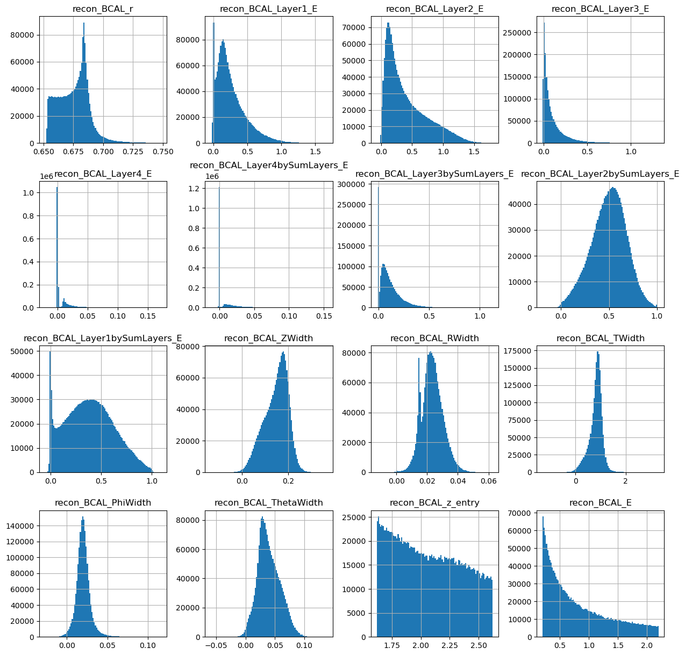
photons[generated_dataframe.columns].hist(figsize=(15,15),bins=100)
array([[<Axes: title={'center': 'recon_BCAL_r'}>,
<Axes: title={'center': 'recon_BCAL_Layer1_E'}>,
<Axes: title={'center': 'recon_BCAL_Layer2_E'}>,
<Axes: title={'center': 'recon_BCAL_Layer3_E'}>],
[<Axes: title={'center': 'recon_BCAL_Layer4_E'}>,
<Axes: title={'center': 'recon_BCAL_Layer4bySumLayers_E'}>,
<Axes: title={'center': 'recon_BCAL_Layer3bySumLayers_E'}>,
<Axes: title={'center': 'recon_BCAL_Layer2bySumLayers_E'}>],
[<Axes: title={'center': 'recon_BCAL_Layer1bySumLayers_E'}>,
<Axes: title={'center': 'recon_BCAL_ZWidth'}>,
<Axes: title={'center': 'recon_BCAL_RWidth'}>,
<Axes: title={'center': 'recon_BCAL_TWidth'}>],
[<Axes: title={'center': 'recon_BCAL_PhiWidth'}>,
<Axes: title={'center': 'recon_BCAL_ThetaWidth'}>,
<Axes: title={'center': 'recon_BCAL_z_entry'}>,
<Axes: title={'center': 'recon_BCAL_E'}>]], dtype=object)
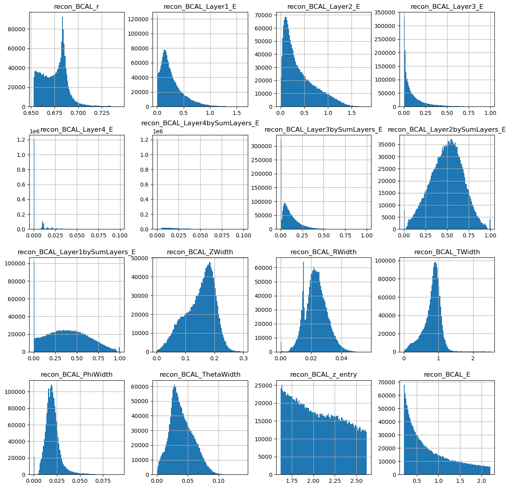
Looks ok. Lets make the same plots as we did from the true datasets.
make_plots(generated_dataframe,"Generated Photons")
Generated Photons
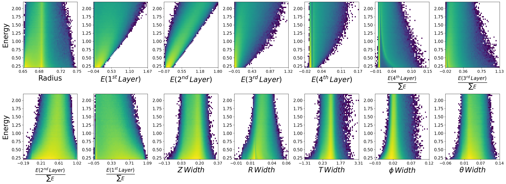
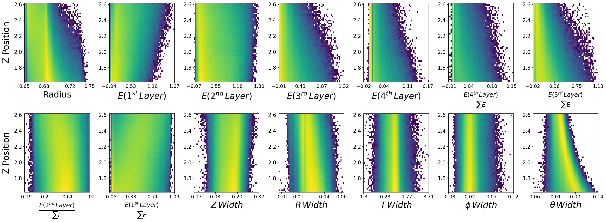
make_plots(photons,"True Photons")
True Photons
Not bad! Do you notice some things that are potentially wrong with the dataset we have generated? For example, what are the physical bounds of some of these features? This is something to think about with generative models in physics. In most cases, it is not enough to simply just generate data. One must come up with a scheme to ensure all samples generated are physical!
Can you think of ways to do this?
Flow Matching#
Now lets train a generative model using conditional Flow Matching. We will be able to use most of what we created above, we just need a seperate model class and a new training function.
from flow_matching.path.scheduler import CondOTScheduler
from flow_matching.path import AffineProbPath
from flow_matching.solver import Solver, ODESolver
from flow_matching.utils import ModelWrapper
from torch import Tensor
The base neural network structure - you are free to modify this later.
def antiderivTanh(x): # activation function aka the antiderivative of tanh
return torch.abs(x) + torch.log(1+torch.exp(-2.0*torch.abs(x)))
def derivTanh(x): # act'' aka the second derivative of the activation function antiderivTanh
return 1 - torch.pow( torch.tanh(x) , 2 )
class ResNN(nn.Module):
def __init__(self, d, m, nTh=2,conditional_dim=2):
super().__init__()
if nTh < 2:
print("nTh must be an integer >= 2")
exit(1)
self.d = d
self.m = m
self.nTh = nTh
self.layers = nn.ModuleList([])
self.layers.append(nn.Linear(d + 1 + conditional_dim, m, bias=True)) # opening layer
self.layers.append(nn.Linear(m,m, bias=True)) # resnet layers
for i in range(nTh-2):
self.layers.append(copy.deepcopy(self.layers[1]))
self.act = antiderivTanh
self.h = 1.0 / (self.nTh-1) # step size for the ResNet
self.output_layer = nn.Linear(m,d)
def forward(self, x,t, c=None):
t = t.reshape(-1,1).float()
if c is None:
x = self.act(self.layers[0].forward(torch.concat([x,t],-1)))
else:
x = self.act(self.layers[0].forward(torch.concat([x,c,t],dim=-1)))
for i in range(1,self.nTh):
x = x + self.h * self.act(self.layers[i](x))
return self.output_layer(x)
def step(self, x,t,c=None):
t = t.reshape(-1, 1).expand(x.shape[0], 1)
if c is None:
x = self.act(self.layers[0].forward(torch.concat([x,t],-1)))
else:
x = self.act(self.layers[0].forward(torch.concat([x,c,t],dim=-1)))
for i in range(1,self.nTh):
x = x + self.h * self.act(self.layers[i](x))
return self.output_layer(x)
# We need this to perform our numerical integration for generation.
class WrappedModel(ModelWrapper):
def forward(self, x: torch.Tensor, t: torch.Tensor, **extras):
c = extras.get("model_extras", {}).get("c", None)
return self.model.step(x, t, c=c)
import copy
class FlowMatching(nn.Module):
def __init__(self,input_shape,layers,context_shape,embedding=False,hidden_units=512,num_blocks=2,stats=None,device='cuda'):
super(FlowMatching, self).__init__()
self.input_shape = input_shape
self.layers = layers
self.context_shape = context_shape
self.embedding = embedding
self.hidden_units = hidden_units
self.num_blocks = num_blocks
self.device = device
self.stats = stats
if self.stats is not None:
self.max_values = torch.tensor(np.array([self.stats[key] for key in list(self.stats.keys())[4:] if key.endswith('_max')])).to(device)
self.min_values = torch.tensor(np.array([self.stats[key] for key in list(self.stats.keys())[4:] if key.endswith('_min')])).to(device)
self.max_conds = torch.tensor(np.array([self.stats[key] for key in list(self.stats.keys())[:4] if key.endswith('_max')])).to(device)
self.min_conds = torch.tensor(np.array([self.stats[key] for key in list(self.stats.keys())[:4] if key.endswith('_min')])).to(device)
else:
print("You have no included any stats for normalization values. Is this intentional?")
if self.embedding:
self.context_embedding = nn.Sequential(*[nn.Linear(context_shape,16),nn.ReLU(),nn.Linear(16,input_shape)])
# Our neural network predicting the velocity field
self.NN = ResNN(nTh=self.layers,m=self.hidden_units,d=self.input_shape,conditional_dim=self.context_shape)
# Our path will follow exactly what we discussed in the slides
self.path = AffineProbPath(scheduler=CondOTScheduler())
# our loss function used for training - simple MSE between v_t and u_t
def compute_loss(self, x_1, context):
if self.embedding:
embedded_context = self.context_embedding(context)
else:
embedded_context = context
x_0 = torch.randn_like(x_1).to(x_1.device)
t = torch.rand(x_1.shape[0]).to(x_1.device)
path_sample = self.path.sample(t=t, x_0=x_0, x_1=x_1)
loss = torch.pow( self.NN(x=path_sample.x_t,t=path_sample.t,c=embedded_context) - path_sample.dx_t, 2).mean()
return loss
# number of integration steps.
def __sample(self,nt=20, context=None):
if self.embedding:
embedded_context = self.context_embedding(context)
else:
embedded_context = context
wrapped_vf = WrappedModel(self.NN)
step_size = 1.0 / (2*nt)
T = torch.linspace(0,1,nt).to(self.device)
x_init = torch.randn((context.shape[0], self.input_shape), dtype=torch.float32, device=self.device)
# Solve the ODE
solver = ODESolver(velocity_model=wrapped_vf)
sol = solver.sample(time_grid=T, x_init=x_init, method='midpoint', step_size=step_size, return_intermediates=False,model_extras={"c": embedded_context})
return sol
def unscale(self,x):
return 0.5 * (x + 1) * (self.max_values - self.min_values) + self.min_values
def _sample(self,nt,context):
samples = self.__sample(nt=nt,context=context)
samples = self.unscale(samples)
return samples.detach().cpu().numpy()
def trainer_fm(config,dataset):
# Setup random seed
torch.manual_seed(config['seed'])
np.random.seed(config['seed'])
random.seed(config['seed'])
torch.cuda.manual_seed(config['seed'])
# Create experiment name
exp_name = config['name']
print(exp_name)
# Create directory structure
output_folder = config['output']['dir']
output_path = os.path.join(output_folder,exp_name)
os.makedirs(output_path,exist_ok=True)
with open(os.path.join(output_path,'config.json'),'w') as outfile:
json.dump(config, outfile)
# Load the dataset
print('Creating Loaders.')
stats = config['stats']
# Create datasets
train,val,test = create_train_test_split(dataset.to_numpy())
train = BCALDataset(dataset=train,mode="Single",stats=stats)
val = BCALDataset(dataset=val,mode="Single",stats=stats)
test_photons = BCALDataset(dataset=test,mode="Single",stats=stats)
train_batch_size = config['dataloader']['train']['batch_size']
val_batch_size = config['dataloader']['val']['batch_size']
test_batch_size = config['dataloader']['val']['batch_size']
train_loader,val_loader,test_loader = CreateLoaders(train,val,test,train_batch_size,val_batch_size,test_batch_size)
history = {'train_loss':[],'val_loss':[],'lr':[]}
print("Training Size: {0}".format(len(train_loader.dataset)))
print("Validation Size: {0}".format(len(val_loader.dataset)))
# Create the model
num_layers = int(config['model']['num_layers'])
input_shape = int(config['model']['input_shape'])
cond_shape = int(config['model']['cond_shape'])
num_blocks = int(config['model']['num_blocks'])
hidden_nodes = int(config['model']['hidden_nodes'])
net = FlowMatching(input_shape,num_layers,cond_shape,embedding=False,hidden_units=hidden_nodes,num_blocks=num_blocks,stats=stats)
t_params = sum(p.numel() for p in net.parameters())
print("Network Parameters: ",t_params)
device = torch.device('cuda')
net.to('cuda')
# Optimizer
num_epochs=int(config['num_epochs'])
lr = float(config['optimizer']['lr'])
optimizer = optim.Adam(list(filter(lambda p: p.requires_grad, net.parameters())), lr=lr)
num_steps = len(train_loader) * num_epochs
scheduler = torch.optim.lr_scheduler.CosineAnnealingLR(optimizer=optimizer, T_max=num_steps, last_epoch=-1,
eta_min=0)
startEpoch = 0
global_step = 0
print('=========== Optimizer ==================:')
print(' LR:', lr)
print(' num_epochs:', num_epochs)
print('')
for epoch in range(startEpoch,num_epochs):
kbar = pkbar.Kbar(target=len(train_loader), epoch=epoch, num_epochs=num_epochs, width=20, always_stateful=False)
net.train()
running_loss = 0.0
for i, data in enumerate(train_loader):
input = data[0].to('cuda').float()
k = data[1].to('cuda').float()
optimizer.zero_grad()
with torch.set_grad_enabled(True):
loss = net.compute_loss(x_1=input,context=k)
loss.backward()
torch.nn.utils.clip_grad_norm_(net.parameters(), max_norm=0.5,error_if_nonfinite=True)
optimizer.step()
scheduler.step()
running_loss += loss.item() * input.shape[0]
kbar.update(i, values=[("loss", loss.item())])
global_step += 1
history['train_loss'].append(running_loss / len(train_loader.dataset))
history['lr'].append(scheduler.get_last_lr()[0])
######################
## validation phase ##
######################
if bool(config['run_val']):
net.eval()
val_loss = 0.0
with torch.no_grad():
for i, data in enumerate(val_loader):
input = data[0].to('cuda').float()
k = data[1].to('cuda').float()
loss = net.compute_loss(x_1=input,context=k)
val_loss += loss
val_loss = val_loss.cpu().numpy() / len(val_loader)
history['val_loss'].append(val_loss)
kbar.add(1, values=[("val_loss", val_loss.item())])
name_output_file = config['name']+'_epoch{:02d}_val_loss_{:.6f}.pth'.format(epoch, val_loss)
else:
kbar.add(1,values=[('val_loss',0.)])
name_output_file = config['name']+'_epoch{:02d}_train_loss_{:.6f}.pth'.format(epoch, running_loss / len(train_loader.dataset))
filename = os.path.join(output_path, name_output_file)
checkpoint={}
checkpoint['net_state_dict'] = net.state_dict()
checkpoint['optimizer'] = optimizer.state_dict()
checkpoint['scheduler'] = scheduler.state_dict()
checkpoint['epoch'] = epoch
checkpoint['history'] = history
checkpoint['global_step'] = global_step
torch.save(checkpoint,filename)
print('')
config_fm = {"seed":8,
"name": "MyPhotonFlowMatching",
"run_val":1,
"stats" :stats,
"model": {
"num_layers":8,
"input_shape":14,
"cond_shape":2,
"num_blocks":2,
"hidden_nodes": 512
},
"optimizer": {
"lr": 7e-4,
},
"num_epochs": 50,
"dataloader": {
"train": {
"batch_size": 2048
},
"val": {
"batch_size": 2048
},
"test": {
"batch_size": 25
},
},
"output": {
"dir":"./"
}
}
trainer_fm(config_fm,photons)
MyPhotonFlowMatching
Creating Loaders.
Total dataset size: 1726143
Number of Training data points: 1208300
Number of Validation data points: 258921
Number of Testing data points: 258922
Training Size: 1208300
Validation Size: 258921
Network Parameters: 1854990
=========== Optimizer ==================:
LR: 0.0007
num_epochs: 50
Epoch: 1/50
590/590 [====================] - 26s 44ms/step - loss: 0.4484 - val_loss: 0.3051
Epoch: 2/50
590/590 [====================] - 26s 44ms/step - loss: 0.2520 - val_loss: 0.2257
Epoch: 3/50
590/590 [====================] - 26s 44ms/step - loss: 0.2081 - val_loss: 0.1924
Epoch: 4/50
590/590 [====================] - 26s 44ms/step - loss: 0.1879 - val_loss: 0.1844
Epoch: 5/50
590/590 [====================] - 26s 44ms/step - loss: 0.1780 - val_loss: 0.1797
Epoch: 6/50
590/590 [====================] - 26s 44ms/step - loss: 0.1711 - val_loss: 0.1695
Epoch: 7/50
590/590 [====================] - 26s 44ms/step - loss: 0.1689 - val_loss: 0.1629
Epoch: 8/50
590/590 [====================] - 26s 44ms/step - loss: 0.1647 - val_loss: 0.1572
Epoch: 9/50
590/590 [====================] - 26s 44ms/step - loss: 0.1624 - val_loss: 0.1551
Epoch: 10/50
590/590 [====================] - 26s 44ms/step - loss: 0.1605 - val_loss: 0.1595
Epoch: 11/50
590/590 [====================] - 26s 44ms/step - loss: 0.1595 - val_loss: 0.1690
Epoch: 12/50
590/590 [====================] - 26s 44ms/step - loss: 0.1579 - val_loss: 0.1583
Epoch: 13/50
590/590 [====================] - 26s 44ms/step - loss: 0.1563 - val_loss: 0.1607
Epoch: 14/50
590/590 [====================] - 26s 44ms/step - loss: 0.1553 - val_loss: 0.1552
Epoch: 15/50
590/590 [====================] - 26s 44ms/step - loss: 0.1541 - val_loss: 0.1517
Epoch: 16/50
590/590 [====================] - 26s 44ms/step - loss: 0.1540 - val_loss: 0.1505
Epoch: 17/50
590/590 [====================] - 26s 44ms/step - loss: 0.1525 - val_loss: 0.1548
Epoch: 18/50
590/590 [====================] - 26s 44ms/step - loss: 0.1518 - val_loss: 0.1476
Epoch: 19/50
590/590 [====================] - 26s 44ms/step - loss: 0.1501 - val_loss: 0.1511
Epoch: 20/50
590/590 [====================] - 26s 44ms/step - loss: 0.1493 - val_loss: 0.1475
Epoch: 21/50
590/590 [====================] - 26s 45ms/step - loss: 0.1490 - val_loss: 0.1484
Epoch: 22/50
590/590 [====================] - 26s 44ms/step - loss: 0.1482 - val_loss: 0.1495
Epoch: 23/50
590/590 [====================] - 26s 44ms/step - loss: 0.1479 - val_loss: 0.1459
Epoch: 24/50
590/590 [====================] - 26s 44ms/step - loss: 0.1468 - val_loss: 0.1457
Epoch: 25/50
590/590 [====================] - 26s 44ms/step - loss: 0.1460 - val_loss: 0.1461
Epoch: 26/50
590/590 [====================] - 26s 44ms/step - loss: 0.1454 - val_loss: 0.1452
Epoch: 27/50
590/590 [====================] - 26s 44ms/step - loss: 0.1449 - val_loss: 0.1449
Epoch: 28/50
590/590 [====================] - 26s 44ms/step - loss: 0.1442 - val_loss: 0.1451
Epoch: 29/50
590/590 [====================] - 26s 44ms/step - loss: 0.1442 - val_loss: 0.1446
Epoch: 30/50
590/590 [====================] - 26s 44ms/step - loss: 0.1430 - val_loss: 0.1435
Epoch: 31/50
590/590 [====================] - 26s 44ms/step - loss: 0.1428 - val_loss: 0.1429
Epoch: 32/50
590/590 [====================] - 26s 44ms/step - loss: 0.1424 - val_loss: 0.1426
Epoch: 33/50
590/590 [====================] - 26s 44ms/step - loss: 0.1414 - val_loss: 0.1406
Epoch: 34/50
590/590 [====================] - 26s 44ms/step - loss: 0.1414 - val_loss: 0.1417
Epoch: 35/50
590/590 [====================] - 26s 44ms/step - loss: 0.1408 - val_loss: 0.1407
Epoch: 36/50
590/590 [====================] - 26s 44ms/step - loss: 0.1407 - val_loss: 0.1399
Epoch: 37/50
590/590 [====================] - 26s 44ms/step - loss: 0.1402 - val_loss: 0.1406
Epoch: 38/50
590/590 [====================] - 26s 44ms/step - loss: 0.1398 - val_loss: 0.1398
Epoch: 39/50
590/590 [====================] - 26s 44ms/step - loss: 0.1395 - val_loss: 0.1392
Epoch: 40/50
590/590 [====================] - 26s 44ms/step - loss: 0.1392 - val_loss: 0.1392
Epoch: 41/50
590/590 [====================] - 26s 44ms/step - loss: 0.1391 - val_loss: 0.1385
Epoch: 42/50
590/590 [====================] - 26s 44ms/step - loss: 0.1388 - val_loss: 0.1391
Epoch: 43/50
590/590 [====================] - 26s 44ms/step - loss: 0.1388 - val_loss: 0.1388
Epoch: 44/50
590/590 [====================] - 26s 44ms/step - loss: 0.1382 - val_loss: 0.1385
Epoch: 45/50
590/590 [====================] - 26s 44ms/step - loss: 0.1382 - val_loss: 0.1383
Epoch: 46/50
590/590 [====================] - 26s 44ms/step - loss: 0.1384 - val_loss: 0.1377
Epoch: 47/50
590/590 [====================] - 26s 44ms/step - loss: 0.1381 - val_loss: 0.1382
Epoch: 48/50
590/590 [====================] - 29s 49ms/step - loss: 0.1379 - val_loss: 0.1386
Epoch: 49/50
590/590 [====================] - 26s 45ms/step - loss: 0.1378 - val_loss: 0.1380
Epoch: 50/50
590/590 [====================] - 26s 44ms/step - loss: 0.1380 - val_loss: 0.1385
num_layers = int(config_fm['model']['num_layers'])
input_shape = int(config_fm['model']['input_shape'])
cond_shape = int(config_fm['model']['cond_shape'])
num_blocks = int(config_fm['model']['num_blocks'])
hidden_nodes = int(config_fm['model']['hidden_nodes'])
net = FlowMatching(input_shape,num_layers,cond_shape,embedding=False,hidden_units=hidden_nodes,num_blocks=num_blocks,stats=stats)
t_params = sum(p.numel() for p in net.parameters())
print("Network Parameters: ",t_params)
device = torch.device('cuda')
net.to('cuda')
dicte = torch.load(os.path.join(config_fm['name'],os.listdir(config_fm['name'])[-1]))
net.load_state_dict(dicte["net_state_dict"])
Network Parameters: 1854990
/tmp/ipykernel_8616/203205216.py:12: FutureWarning: You are using `torch.load` with `weights_only=False` (the current default value), which uses the default pickle module implicitly. It is possible to construct malicious pickle data which will execute arbitrary code during unpickling (See https://github.com/pytorch/pytorch/blob/main/SECURITY.md#untrusted-models for more details). In a future release, the default value for `weights_only` will be flipped to `True`. This limits the functions that could be executed during unpickling. Arbitrary objects will no longer be allowed to be loaded via this mode unless they are explicitly allowlisted by the user via `torch.serialization.add_safe_globals`. We recommend you start setting `weights_only=True` for any use case where you don't have full control of the loaded file. Please open an issue on GitHub for any issues related to this experimental feature.
dicte = torch.load(os.path.join(config_fm['name'],os.listdir(config_fm['name'])[-1]))
<All keys matched successfully>
all_data = BCALDataset(photons.to_numpy(),mode="Single",stats=stats)
all_loader = DataLoader(all_data,batch_size=10000)
net.eval() # Eval mode
generations = []
conditions = []
kbar = pkbar.Kbar(target=len(all_loader), width=20, always_stateful=False)
for i,data in enumerate(all_loader):
kinematics = data[1].to('cuda').float()
conditions.append(data[2].numpy())
with torch.set_grad_enabled(False): # Same as with torch.no_grad():
gens = net._sample(nt=20,context=kinematics) # You can play around with integration steps - if you want to experiment with different integration methods we can
generations.append(gens)
kbar.update(i)
generations = np.concatenate(generations)
conditions = np.concatenate(conditions)
172/173 [==================>.] - ETA: 0s
generated_dataframe = pd.DataFrame(generations,columns=photons.columns[2:])
generated_dataframe['recon_BCAL_z_entry'] = conditions[:,0]
generated_dataframe['recon_BCAL_E'] = conditions[:,1]
generated_dataframe.hist(bins=100,figsize=(15,15))
array([[<Axes: title={'center': 'recon_BCAL_r'}>,
<Axes: title={'center': 'recon_BCAL_Layer1_E'}>,
<Axes: title={'center': 'recon_BCAL_Layer2_E'}>,
<Axes: title={'center': 'recon_BCAL_Layer3_E'}>],
[<Axes: title={'center': 'recon_BCAL_Layer4_E'}>,
<Axes: title={'center': 'recon_BCAL_Layer4bySumLayers_E'}>,
<Axes: title={'center': 'recon_BCAL_Layer3bySumLayers_E'}>,
<Axes: title={'center': 'recon_BCAL_Layer2bySumLayers_E'}>],
[<Axes: title={'center': 'recon_BCAL_Layer1bySumLayers_E'}>,
<Axes: title={'center': 'recon_BCAL_ZWidth'}>,
<Axes: title={'center': 'recon_BCAL_RWidth'}>,
<Axes: title={'center': 'recon_BCAL_TWidth'}>],
[<Axes: title={'center': 'recon_BCAL_PhiWidth'}>,
<Axes: title={'center': 'recon_BCAL_ThetaWidth'}>,
<Axes: title={'center': 'recon_BCAL_z_entry'}>,
<Axes: title={'center': 'recon_BCAL_E'}>]], dtype=object)
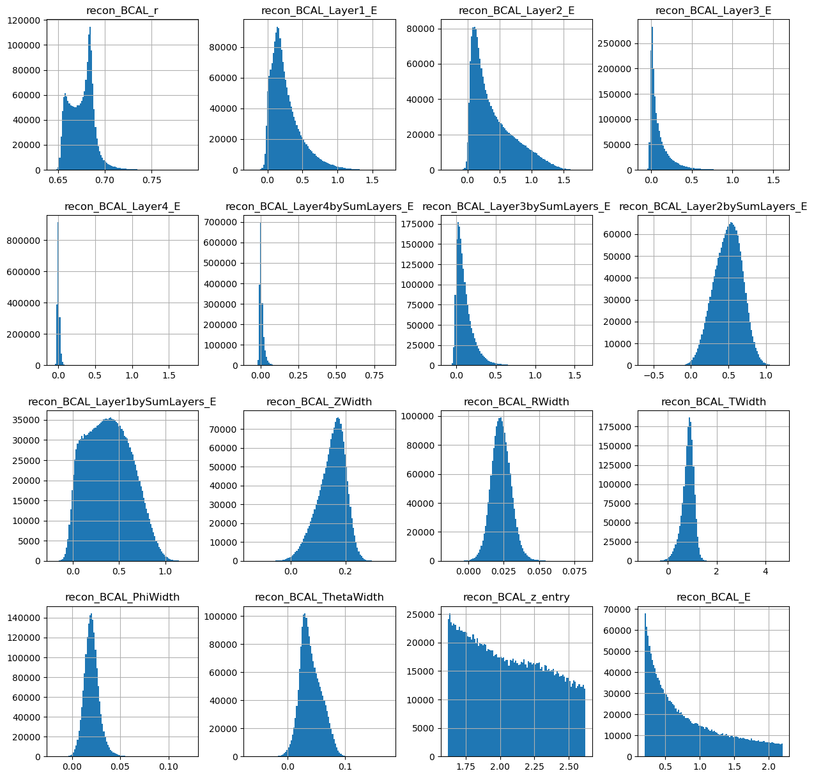
make_plots(generated_dataframe,"Generated Photons")
Generated Photons
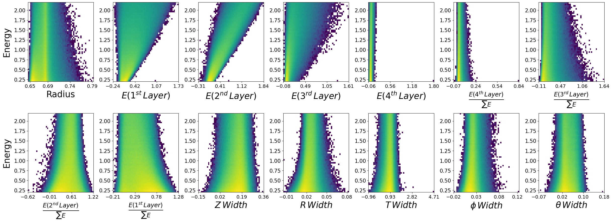
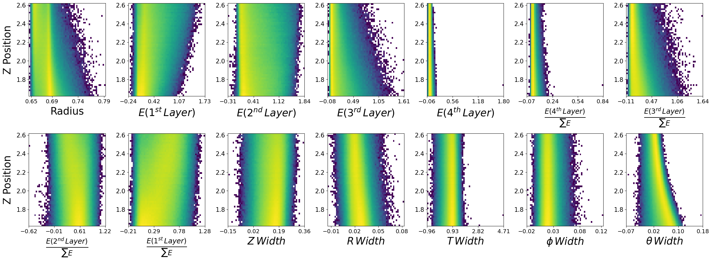
make_plots(photons,"True Photons")
True Photons
Your turn.#
Now I want you to utlize the code we have developed together above to recreate a model that works on neutrons. You can make any changes you want to hyperparameters, but keep in mind training times as network complexity grows.
Try using Normalizing Flows, Flow Matching or both! If you use Flow Matching, consider experimenting with the backbone structure (the neural network \(v_t\) in the slides). For Flow Matching, you can also consider different integration methods and number of time steps - if you want to do this feel free to ask me. For Normalizing flows, you can also consider different base distributions - if you want to do this feel free to ask me.
Also, perhaps you can write some plotting code to overlap the generate and true distributions - this will make visual comparison easier.
This is your individual copy of the notebook, so feel free to work directly below this cell, or you can make a copy.
Things I want you to think about:
Once you have trained your model, look at the generations and see how they compare.
Are any of the generations unphysical? Can you come up with a strategy to deal with this? This can be as simple or complicated as you like.
How do we evaluate generative models - perhaps you want to do some research here while your models train. You will likely find certain metrics for images, but what about physics generations? What do people use to compare? Are there issues with these? Make a list and some notes.
Any issues or questions please let me know!